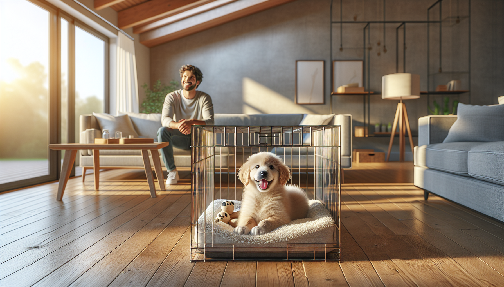

Crate training is one of the most useful life skills you can teach a new puppy. Done properly, a crate becomes a safe, comfortable space where your puppy can relax, sleep, and learn healthy routines. It can also make potty training easier, help prevent destructive chewing, support travel and vet visits, and give your puppy a sense of security during the big transition into a new home.
For many new puppy parents and rescue adopters, though, the idea of crate training can feel confusing or even stressful. What size crate should you buy? How long can a puppy stay in it? What if your puppy cries? And most importantly, how do you make the crate feel positive instead of scary?
The good news is that crate training does not need to involve force, fear, or “cry it out” methods. The most effective approach is gentle, gradual, and science-backed. By pairing the crate with rest, food, toys, and calm experiences, you can teach your puppy that the crate is a safe den-like place, not a punishment.
In this complete guide, you will learn exactly how to crate train a new puppy step by step, avoid common mistakes, handle whining, and build a routine that sets your dog up for long-term success.
When used appropriately, a crate supports both training and emotional wellbeing. Dogs are not den animals in the strict scientific sense, but many do enjoy small, secure resting spaces. A crate can provide that structure, especially in a busy new environment.
Crate training is especially helpful because it can:
For rescue puppies or dogs adjusting to a new home, a crate can be especially valuable. Change is hard, and having a consistent place to rest often helps a dog feel more secure.
That said, a crate is a management and training tool, not a place for long-term confinement. Puppies need exercise, social interaction, training, enrichment, and plenty of sleep outside the crate too. The goal is for the crate to be one healthy part of your puppy’s daily routine.
The best crate is one that is safe, well-ventilated, and sized appropriately. Your puppy should be able to stand up, turn around, and lie down comfortably, but the crate should not be so large that one side becomes a bathroom and the other side a bed. Many wire crates come with divider panels, which are useful because you can increase the space as your puppy grows.
Common crate options include:
To make the crate inviting, add a soft washable mat or bedding if your puppy does not chew or shred fabric. Include a safe chew toy or food-stuffed toy, and keep the area calm and comfortable. Many puppies do best when the crate is placed near family activity during the day and near your bed at night for the first few weeks.
Avoid filling the crate with too many items. Simpler is often better. Safety comes first, so supervise with bedding and toys until you know your puppy’s habits.
The first rule of crate training is simple: never force your puppy into the crate. Instead, help your puppy choose to go in by making it rewarding. This creates positive associations and reduces fear.
Start with these steps:
Keep sessions short and upbeat. If your puppy hesitates, that is okay. Go at their pace. Some puppies walk right in, while others need several short sessions to feel confident. The goal in the beginning is not duration. It is comfort.
Once your puppy happily enters the crate, begin closing the door for just a few seconds while they enjoy a treat or toy. Then open it before your puppy becomes upset. Gradually increase the time with the door closed, always aiming to keep your puppy under their stress threshold.
This gradual approach teaches your puppy an important lesson: being in the crate predicts good things, and you always come back.
A consistent routine helps puppies learn quickly. Here is a simple framework for the first week at home.
Day 1-2: Focus on exploration and positive associations. Feed meals in or near the crate. Toss treats inside. Let your puppy nap there with the door open if they choose.
Day 3-4: Begin very short closed-door sessions while you sit nearby. Give your puppy a stuffed toy, close the door for 10 to 30 seconds, then open it calmly. Repeat several times a day.
Day 5-6: Increase crate time to a few minutes while you remain in the room. If your puppy stays relaxed, briefly step away and return before they become distressed.
Day 7 and beyond: Build toward short naps in the crate and brief periods of alone time. Continue using treats, meals, and chew items to make crate time rewarding.
A sample puppy routine might include:
Puppies thrive on cycles of activity, potty, and rest. Many behavior challenges that look like stubbornness are really overtired puppies who need help settling down.
Nighttime is often the hardest part for new puppy parents. Your puppy has just left their litter or previous environment, and sleeping alone can feel scary. This is why keeping the crate near your bed often helps. Your presence can be reassuring, and you will be more likely to hear when your puppy truly needs a potty break.
Before bedtime, make sure your puppy has:
Young puppies usually cannot hold their bladder all night. A rough guideline is that bladder capacity increases with age, but every puppy is different. Plan for one or more nighttime potty trips at first, especially for very young puppies. Keep these outings quiet and boring: straight outside, potty, gentle praise, then back to the crate.
Crate training and potty training work well together because most puppies naturally avoid soiling their sleeping area. But this only works if the crate is the right size and your schedule is realistic. If your puppy has accidents in the crate, they may need more frequent potty breaks, a smaller space, or a vet check if accidents are unusual or persistent.
Some whining is normal, especially in the early days. Your puppy may be adjusting, feel lonely, or need to go outside. The key is to respond thoughtfully rather than automatically.
Ask yourself:
If you suspect your puppy needs to potty, take them out calmly. If they do not potty, return them to the crate without turning it into playtime. If their needs are met and the whining is mild, wait for a brief pause before opening the door so you do not accidentally reward vocalizing.
However, prolonged panic is not something to ignore. Distressed barking, frantic escape attempts, drooling, or intense fear suggest the process is moving too quickly. In that case, go back to easier steps and rebuild comfort gradually. Crate training should create confidence, not learned helplessness.
If your puppy consistently struggles despite a gentle plan, consult a qualified positive reinforcement trainer or veterinary behavior professional.
Even dedicated puppy parents can run into trouble if the crate is used in ways that create negative associations. Avoid these common mistakes:
Another common mistake is assuming all dogs will love the crate immediately. Some puppies adapt quickly, while others need more support. Be patient. Progress is not always linear, especially during the first few weeks.
Remember that the end goal is not just a puppy who tolerates the crate. It is a puppy who feels calm and secure in it.
Crate training a new puppy is most successful when it is built on trust, routine, and positive experiences. A crate can be a powerful tool for potty training, sleep, safety, and emotional regulation, but only when introduced with patience and respect for your puppy’s developmental needs.
Keep sessions short, make the crate rewarding, and adjust your plan based on your puppy’s comfort level. Celebrate small wins: stepping into the crate, relaxing with the door closed, settling for a nap, sleeping a little longer at night. Those moments add up quickly.
Whether you are raising your first puppy, welcoming a rescue dog, or helping a nervous youngster adjust to a new home, gentle crate training can lay the foundation for a calmer, more confident companion.
Want more step-by-step help with puppy training, behavior, and building a great relationship with your dog? Get our full Dog Training eBook series — new titles added weekly.